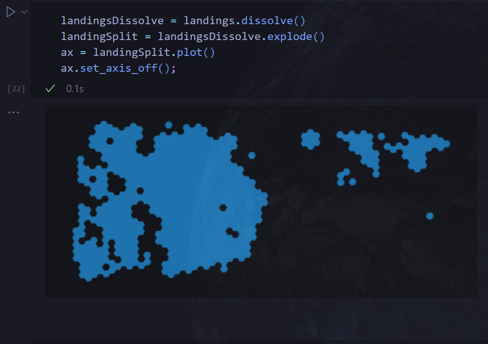
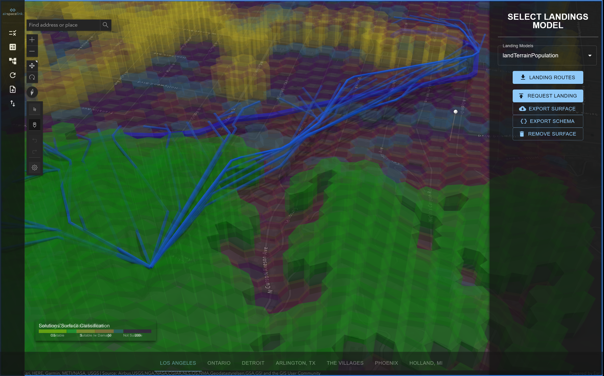

<!DOCTYPE html>
<html lang="en">
  <head>
    <meta charset="utf-8" />
    <meta name="viewport" content="width=device-width, initial-scale=1.0, maximum-scale=1.0, user-scalable=no" />

    <title></title>
    <link rel="stylesheet" href="dist/reveal.css" />
    <link rel="stylesheet" href="dist/theme/black.css" id="theme" />
    <link rel="stylesheet" href="plugin/highlight/zenburn.css" />
	<link rel="stylesheet" href="css/layout.css" />
	<link rel="stylesheet" href="plugin/customcontrols/style.css">
	<link rel="stylesheet" href="plugin/chalkboard/style.css">

	<link rel="stylesheet" href="plugin/reveal-pointer/pointer.css" />


    <script defer src="dist/fontawesome/all.min.js"></script>

	<script type="text/javascript">
		var forgetPop = true;
		function onPopState(event) {
			if(forgetPop){
				forgetPop = false;
			} else {
				parent.postMessage(event.target.location.href, "app://obsidian.md");
			}
        }
		window.onpopstate = onPopState;
		window.onmessage = event => {
			if(event.data == "reload"){
				window.document.location.reload();
			}
			forgetPop = true;
		}

		function fitElements(){
			const itemsToFit = document.getElementsByClassName('fitText');
			for (const item in itemsToFit) {
				if (Object.hasOwnProperty.call(itemsToFit, item)) {
					var element = itemsToFit[item];
					fitElement(element,1, 1000);
					element.classList.remove('fitText');
				}
			}
		}

		function fitElement(element, start, end){

			let size = (end + start) / 2;
			element.style.fontSize = `${size}px`;

			if(Math.abs(start - end) < 1){
				while(element.scrollHeight > element.offsetHeight){
					size--;
					element.style.fontSize = `${size}px`;
				}
				return;
			}

			if(element.scrollHeight > element.offsetHeight){
				fitElement(element, start, size);
			} else {
				fitElement(element, size, end);
			}		
		}


		document.onreadystatechange = () => {
			fitElements();
			if (document.readyState === 'complete') {
				if (window.location.href.indexOf("?export") != -1){
					parent.postMessage(event.target.location.href, "app://obsidian.md");
				}
				if (window.location.href.indexOf("print-pdf") != -1){
					let stateCheck = setInterval(() => {
						clearInterval(stateCheck);
						window.print();
					}, 250);
				}
			}
	};


        </script>
  </head>
  <body>
    <div class="reveal">
      <div class="slides"><section  data-markdown><script type="text/template"><!-- .slide: class="drop" data-background-size="fill" data-background-opacity="0.3" data-background-image="images/demoBackground.png" -->
<div class="" style="position: absolute; left: 0px; top: 0px; height: 700px; width: 960px; min-height: 700px; display: flex; flex-direction: column; align-items: center; justify-content: center" absolute="true">

## AirHub "ReadyToFly"
### Behind the Scenes  
```
      Surface => Routing => Landings => Routes to Landings
```   
October 2023 

<link rel="stylesheet" href="https://cdnjs.cloudflare.com/ajax/libs/highlight.js/11.9.0/styles/tokyo-night-dark.min.css">
<style>
	.medium-txt{ font-size: 36px;  }
	.small-txt{ font-size: xx-large; line-height: 1.4; z-index:999; }
	.smaller-txt{ font-size: x-large; }
	.smallest-txt{ font-size: large; }
	.title:after  {content:"Slide MetaData Demo"}
	.context:after {content: "Fake Meeting Somewhere 2022-08-25";}
	.author:after   {content: "My Name";}
	.medium-code {font-size: 22px; }
	.small-code {font-size: 20px; }
	.smaller-code {font-size: 18px; }
	.reveal pre code { 
		max-height: 600px;
		opacity: 0.8;
		}
</style>
</div></script></section><section  data-markdown><script type="text/template"><!-- .slide: class="drop" data-background-size="fill" data-background-opacity="0.3" data-background-image="images/demoBackground.png" -->
<div class="" style="position: absolute; left: 0px; top: 0px; height: 700px; width: 960px; min-height: 700px; display: flex; flex-direction: column; align-items: center; justify-content: center" absolute="true">

On Demand Insights Demo App `$^1$`<!-- .element: class="medium-txt" -->

</div></script></section><section  data-markdown><script type="text/template"><!-- .slide: class="drop" data-background-size="fill" data-background-opacity="0.3" data-background-image="images/demoBackground.png" -->
<div class="" style="position: absolute; left: 0px; top: 0px; height: 700px; width: 960px; min-height: 700px; display: flex; flex-direction: column; align-items: center; justify-content: center" absolute="true">

Import Request Schema `$^2$`<!-- .element: class="medium-txt" -->

</div></script></section><section  data-markdown><script type="text/template"><!-- .slide: class="drop" data-background-size="fill" data-background-opacity="0.3" data-background-image="images/demoBackground.png" -->
<div class="" style="position: absolute; left: 0px; top: 0px; height: 700px; width: 960px; min-height: 700px; display: flex; flex-direction: column; align-items: center; justify-content: center" absolute="true">

<!-- .element: class="small-txt" -->Import Request Schema Example:<!-- element class="small-txt" -->
<!-- .element: class="smaller-code" -->
```JSON
{
    "resolution": 11,
    "scoring": {
        "LOW": 5,
        "MED": 50,
        "HIGH": 200
    },
    "layers": [
        {
            "code": "lulc",
            "fields": [
                "mode"
            ],
            "score": "BASE",
            "fieldType": "",
            "newField": "",
            "expr": []
        },
        {
            "fields": [
                "density"
            ],
            "code": "population",
            "score": "HIGH",
            "expr": "lambda x: 1 if x > 20000 else None",
            "fieldType": "FUNC",
            "newField": "Population in daytime - 1"
        },
        {
            "fields": [
                "highway"
            ],
            "code": "roads",
            "score": "LOW",
            "expr": "service|secondary|secondary_link",
            "fieldType": "MATCH_PARTIAL",
            "newField": "Roads - 1"
        },
        {
            "fields": [
                "highway"
            ],
            "code": "roads",
            "score": "MED",
            "expr": "motorway_junction|motorway_link|primary|primary_link",
            "fieldType": "MATCH_PARTIAL",
            "newField": "Roads - 2"
        }
    ],
    "geometry": {
        "type": "Polygon",
        "coordinates": [
            [
                [
                    -118.36137965900339,
                    34.11565697981261
                ],
                [
                    -118.32607233489982,
                    34.11435356033698
                ],
                [
                    -118.32699438196055,
                    34.089376939210176
                ],
                [
                    -118.36230170606413,
                    34.09068035868581
                ],
                [
                    -118.36137965900339,
                    34.11565697981261
                ]
            ]
        ]
    },
    "landing": false,
    "landing_model": "",
    "landing_config": ""
}
```
<!-- .element: class="smaller-code" -->
</div></script></section><section  data-markdown><script type="text/template"><!-- .slide: class="drop" data-background-size="fill" data-background-opacity="0.3" data-background-image="images/demoBackground.png" -->
<div class="" style="position: absolute; left: 0px; top: 0px; height: 700px; width: 960px; min-height: 700px; display: flex; flex-direction: column; align-items: center; justify-content: center" absolute="true">

Request Surface `$^3$`<!-- .element: class="medium-txt" -->    


data-services-poc/solutionsSurfaceV2 -  Airhub Python SDK - AirHub API /v2/surface<!-- .element: class="smallest-txt" -->
</div></script></section><section  data-markdown><script type="text/template"><!-- .slide: class="drop" data-background-size="fill" data-background-opacity="0.3" data-background-image="images/demoBackground.png" -->
<div class="" style="position: absolute; left: 0px; top: 0px; height: 700px; width: 960px; min-height: 700px; display: flex; flex-direction: column; align-items: center; justify-content: center" absolute="true">

Request Route `$^4$`<!-- .element: class="medium-txt" -->    


data-services-poc/routingSolutions -  Airhub Python SDK - AirHub API /v2/route<!-- .element: class="smallest-txt" -->
</div></script></section><section  data-markdown><script type="text/template"><!-- .slide: class="drop" data-background-size="fill" data-background-opacity="0.3" data-background-image="images/demoBackground.png" -->
<div class="" style="position: absolute; left: 0px; top: 0px; height: 700px; width: 960px; min-height: 700px; display: flex; flex-direction: column; align-items: center; justify-content: center" absolute="true">

Select Landing Model `$^5$`<!-- .element: class="medium-txt" -->    


 [landing_models.json](https://github.com/airspace-link-inc/data-services-poc/blob/main/solutionsSurfaceV2/landing_models.json)<!-- .element: class="smaller-txt" -->
</div></script></section><section  data-markdown><script type="text/template"><!-- .slide: class="drop" data-background-size="fill" data-background-opacity="0.3" data-background-image="images/demoBackground.png" -->
<div class="" style="position: absolute; left: 0px; top: 0px; height: 700px; width: 960px; min-height: 700px; display: flex; flex-direction: column; align-items: center; justify-content: center" absolute="true">

Request Emergency Landings `$^6$`<!-- .element: class="medium-txt" -->    


data-services-poc/solutionsSurfaceV2 -  Airhub Python SDK - AirHub API /v2/surface<!-- .element: class="smallest-txt" -->
</div></script></section><section  data-markdown><script type="text/template"><!-- .slide: class="drop" data-background-size="fill" data-background-opacity="0.3" data-background-image="images/demoBackground.png" -->
<div class="" style="position: absolute; left: 0px; top: 0px; height: 700px; width: 960px; min-height: 700px; display: flex; flex-direction: column; align-items: center; justify-content: center" absolute="true">

<split even gap="1">
How do we navigate to Landing Sites?<!-- .element: class="medium-txt" -->


</split>

Load Routing Surface and Landing Surface as GeoDataframes<!-- .element: class="smaller-txt" -->
</div></script></section><section  data-markdown><script type="text/template"><!-- .slide: class="drop" data-background-size="fill" data-background-opacity="0.3" data-background-image="images/demoBackground.png" -->
<div class="" style="position: absolute; left: 0px; top: 0px; height: 700px; width: 960px; min-height: 700px; display: flex; flex-direction: column; align-items: center; justify-content: center" absolute="true">

Filter Landings `$^7$`<!-- .element: class="medium-txt" -->


'emergency_landing_score' == 1 <!-- .element: class="smaller-txt" -->
</div></script></section><section  data-markdown><script type="text/template"><!-- .slide: class="drop" data-background-size="fill" data-background-opacity="0.3" data-background-image="images/demoBackground.png" -->
<div class="" style="position: absolute; left: 0px; top: 0px; height: 700px; width: 960px; min-height: 700px; display: flex; flex-direction: column; align-items: center; justify-content: center" absolute="true">

<split gap="1">
Only 'SUITABLE' Landing hex cells remaining <!-- .element: class="medium-txt" -->


</split>
</div></script></section><section  data-markdown><script type="text/template"><!-- .slide: class="drop" data-background-size="fill" data-background-opacity="0.3" data-background-image="images/demoBackground.png" -->
<div class="" style="position: absolute; left: 0px; top: 0px; height: 700px; width: 960px; min-height: 700px; display: flex; flex-direction: column; align-items: center; justify-content: center" absolute="true">

<split even gap="1">
Dissolve, Explode, and Filter sites by area 8 & 9 <!-- .element: class="medium-txt" -->



</split>

Join ALL hexes, split non-contiguous polygons, remove <!-- .element: class="smallest-txt" -->`$sites\lt 30000^2m$`
</div></script></section><section  data-markdown><script type="text/template"><!-- .slide: class="drop" data-background-size="fill" data-background-opacity="0.3" data-background-image="images/demoBackground.png" -->
<div class="" style="position: absolute; left: 0px; top: 0px; height: 700px; width: 960px; min-height: 700px; display: flex; flex-direction: column; align-items: center; justify-content: center" absolute="true">

Get Landing Site Centroids `$^{10}$`<!-- .element: class="medium-txt" -->

</div></script></section><section  data-markdown><script type="text/template"><!-- .slide: class="drop" data-background-size="fill" data-background-opacity="0.3" data-background-image="images/demoBackground.png" -->
<div class="" style="position: absolute; left: 0px; top: 0px; height: 700px; width: 960px; min-height: 700px; display: flex; flex-direction: column; align-items: center; justify-content: center" absolute="true">

Load original Route & get points `$^{11}$`<!-- .element: class="medium-txt" -->

</div></script></section><section  data-markdown><script type="text/template"><!-- .slide: class="drop" data-background-size="fill" data-background-opacity="0.3" data-background-image="images/demoBackground.png" -->
<div class="" style="position: absolute; left: 0px; top: 0px; height: 700px; width: 960px; min-height: 700px; display: flex; flex-direction: column; align-items: center; justify-content: center" absolute="true">

Convert route points to H3 hex traversal `$^{12}$`<!-- .element: class="medium-txt" -->

<split even gap="1">

<!-- .element: class="smaller-code" -->
```python
def PointsToH3TraversalGeoJSON(PointsGeoJSON: dict, h3Res: int)-> dict:
    GeoJSON = {'type': 'FeatureCollection', 'features': []}
    arrLen = len(PointsGeoJSON['features'])
    for i, feature in enumerate(PointsGeoJSON['features']):
        coords = feature['geometry']['coordinates']
        h3Current = h3.geo_to_h3(coords[1], coords[0], h3Res)
        atEndIncrement = 1 if arrLen-1 != i else 0
        h3Next = h3.geo_to_h3(
            PointsGeoJSON['features'][i + atEndIncrement]['geometry']['coordinates'][1],
            PointsGeoJSON['features'][i + atEndIncrement]['geometry']['coordinates'][0], 
            h3Res)
        hexLine = h3.h3_line(h3Next, h3Current)

        for i, z in enumerate(hexLine):
            geom = h3.h3_to_geo_boundary(z, True)
            feature = {"type": "Feature", 
                       "properties": feature['properties'],
                       "geometry": {"type": "Polygon", "coordinates": [geom]}
                       }
            feature['properties']['H3'] = z
            GeoJSON['features'].append(feature)
    return GeoJSON
```
<!-- .element: class="smaller-code" -->


</split>
</div></script></section><section  data-markdown><script type="text/template"><!-- .slide: class="drop" data-background-size="fill" data-background-opacity="0.3" data-background-image="images/demoBackground.png" -->
<div class="" style="position: absolute; left: 0px; top: 0px; height: 700px; width: 960px; min-height: 700px; display: flex; flex-direction: column; align-items: center; justify-content: center" absolute="true">

Get hex cell centroids `$^{13}$`<!-- .element: class="medium-txt" -->

<split even gap="1">

<!-- .element: class="small-code" -->
```python
def getGeoJSONpolyCenters(GeoJSON: FeatureCollection)-> dict:
    h3Polygdf = gpd.GeoDataFrame.from_features(GeoJSON, crs=4326)
    h3Polygdf.to_crs(4326, inplace=True)
    h3CenterGDF = h3Polygdf['geometry'].apply(lambda g: g.centroid)
    return json.loads(h3CenterGDF.to_json())
```
<!-- .element: class="small-code" -->


</split>
</div></script></section><section  data-markdown><script type="text/template"><!-- .slide: class="drop" data-background-size="fill" data-background-opacity="0.3" data-background-image="images/demoBackground.png" -->
<div class="" style="position: absolute; left: 0px; top: 0px; height: 700px; width: 960px; min-height: 700px; display: flex; flex-direction: column; align-items: center; justify-content: center" absolute="true">

Spatially Join route points to nearest landing `$^{14}$`<!-- .element: class="medium-txt" -->

</div></script></section><section  data-markdown><script type="text/template"><!-- .slide: class="drop" data-background-size="fill" data-background-opacity="0.3" data-background-image="images/demoBackground.png" -->
<div class="" style="position: absolute; left: 0px; top: 0px; height: 700px; width: 960px; min-height: 700px; display: flex; flex-direction: column; align-items: center; justify-content: center" absolute="true">

Waypoint list for each landing site & route points `$^{15}$`<!-- .element: class="medium-txt" -->

<split even gap="1">

<!-- .element: class="small-code" -->
```python
def nearest_site_lists(nearestSites: gpd.GeoDataFrame, landingCenters: gpd.GeoDataFrame) -> dict:
    nearestSites.to_crs(4326, inplace=True)
    landingSiteIndicies = nearestSites['level_1'].unique()
    landingSitePointLists = []
    for siteIndex in landingSiteIndicies:
        # set POINT geometry of landing site as first point in list 
        landingSiteGeom = [
            (landingCenters[landingCenters['level_1'] == siteIndex]['centroid'].x).item(), 
            (landingCenters[landingCenters['level_1'] == siteIndex]['centroid'].y).item()
        ]
        site = [landingSiteGeom]
        for i, row in enumerate(nearestSites.itertuples()):
            # append routePoints to get path to landingSites
            site.append([row[1].x, row[1].y]) if row[4] == siteIndex else None
        landingSitePointLists.append(site)
    return landingSitePointList
```
<!-- .element: class="small-code" -->


</split>
</div></script></section><section  data-markdown><script type="text/template"><!-- .slide: class="drop" data-background-size="fill" data-background-opacity="0.3" data-background-image="images/demoBackground.png" -->
<div class="" style="position: absolute; left: 0px; top: 0px; height: 700px; width: 960px; min-height: 700px; display: flex; flex-direction: column; align-items: center; justify-content: center" absolute="true">

Send request for Landing Site to routingSolutions `$^{16}$`<!-- .element: class="medium-txt" -->

</div></script></section><section  data-markdown><script type="text/template"><!-- .slide: class="drop" data-background-size="fill" data-background-opacity="0.3" data-background-image="images/demoBackground.png" -->
<div class="" style="position: absolute; left: 0px; top: 0px; height: 700px; width: 960px; min-height: 700px; display: flex; flex-direction: column; align-items: center; justify-content: center" absolute="true">

Safest route to landing site from each point! `$^{17}$`<!-- .element: class="medium-txt" -->

</div></script></section><section  data-markdown><script type="text/template"><!-- .slide: class="drop" data-background-size="fill" data-background-opacity="0.3" data-background-image="images/demoBackground.png" -->
<div class="" style="position: absolute; left: 0px; top: 0px; height: 700px; width: 960px; min-height: 700px; display: flex; flex-direction: column; align-items: center; justify-content: center" absolute="true">

All layers visualized in ReadyToFly Demo<!-- .element: class="medium-txt" -->

</div></script></section><section  data-markdown><script type="text/template"><!-- .slide: class="drop" data-background-size="fill" data-background-opacity="0.3" data-background-image="images/demoBackground.png" -->
<div class="" style="position: absolute; left: 0px; top: 0px; height: 700px; width: 960px; min-height: 700px; display: flex; flex-direction: column; align-items: center; justify-content: center" absolute="true">

3D Views<!-- .element: class="medium-txt" -->

</div></script></section><section  data-markdown><script type="text/template">
</script></section></div>
    </div>

    <script src="dist/reveal.js"></script>

    <script src="plugin/markdown/markdown.js"></script>
    <script src="plugin/highlight/highlight.js"></script>
    <script src="plugin/zoom/zoom.js"></script>
    <script src="plugin/notes/notes.js"></script>
    <script src="plugin/math/math.js"></script>
	<script src="plugin/mermaid/mermaid.js"></script>
	<script src="plugin/chart/chart.min.js"></script>
	<script src="plugin/chart/plugin.js"></script>
	<script src="plugin/customcontrols/plugin.js"></script>
	<script src="plugin/chalkboard/plugin.js"></script>
	<script src="plugin/reveal-pointer/pointer.js"></script>

    <script>
      function extend() {
        var target = {};
        for (var i = 0; i < arguments.length; i++) {
          var source = arguments[i];
          for (var key in source) {
            if (source.hasOwnProperty(key)) {
              target[key] = source[key];
            }
          }
        }
        return target;
      }

	  function isLight(color) {
		let hex = color.replace('#', '');

		// convert #fff => #ffffff
		if(hex.length == 3){
			hex = `${hex[0]}${hex[0]}${hex[1]}${hex[1]}${hex[2]}${hex[2]}`;
		}

		const c_r = parseInt(hex.substr(0, 2), 16);
		const c_g = parseInt(hex.substr(2, 2), 16);
		const c_b = parseInt(hex.substr(4, 2), 16);
		const brightness = ((c_r * 299) + (c_g * 587) + (c_b * 114)) / 1000;
		return brightness > 155;
	}

	var bgColor = getComputedStyle(document.documentElement).getPropertyValue('--r-background-color').trim();
	var isLight = isLight(bgColor);

	if(isLight){
		document.body.classList.add('has-light-background');
	} else {
		document.body.classList.add('has-dark-background');
	}

      // default options to init reveal.js
      var defaultOptions = {
        controls: true,
        progress: true,
        history: true,
        center: true,
        transition: 'default', // none/fade/slide/convex/concave/zoom
        plugins: [
          RevealMarkdown,
          RevealHighlight,
          RevealZoom,
          RevealNotes,
          RevealMath.MathJax3,
		  RevealMermaid,
		  RevealChart,
		  RevealCustomControls,
	      RevealPointer,
		  RevealChalkboard, 
        ],


    	allottedTime: 120 * 1000,

		mathjax3: {
			mathjax: 'plugin/math/mathjax/tex-mml-chtml.js',
		},
		markdown: {
		  gfm: true,
		  mangle: true,
		  pedantic: false,
		  smartLists: false,
		  smartypants: false,
		},

		mermaid: {
			theme: isLight ? 'default' : 'dark',
		},

		customcontrols: {
			controls: [
				{id: 'toggle-overview',
				title: 'Toggle overview (O)',
				icon: '<i class="fa fa-th"></i>',
				action: 'Reveal.toggleOverview();'
				},
				{ icon: '<i class="fa fa-pen-square"></i>',
				title: 'Toggle chalkboard (B)',
				action: 'RevealChalkboard.toggleChalkboard();'
				},
				{ icon: '<i class="fa fa-pen"></i>',
				title: 'Toggle notes canvas (C)',
				action: 'RevealChalkboard.toggleNotesCanvas();'
				},
			]
		},
      };

      // options from URL query string
      var queryOptions = Reveal().getQueryHash() || {};

      var options = extend(defaultOptions, {"width":960,"height":700,"margin":0,"controls":true,"progress":true,"slideNumber":false,"transition":"fade","transitionSpeed":"normal"}, queryOptions);
    </script>

    <script>
      Reveal.initialize(options);
    </script>
  </body>

  <!-- created with Advanced Slides -->
</html>
